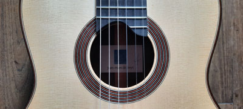
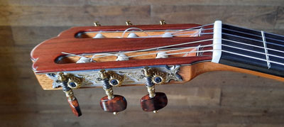
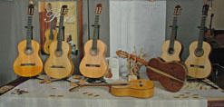

: disponible / available :
Jean-Marc De Beys
Classique - Épicéa / Palissandre " Torres "
" XXè anniversaire "
coopérative de Luthiers
Nous vous présentons ici des instruments sélectionnés avec le plus grand soin chez les meilleurs maîtres artisans luthiers
plus d'une 100aine de guitares de luthiers disponibles !


OUVERT sur rendez-vous :actuellement à votre disposition en Midi-Pyrénées pour y essayer toutes les guitares au calme
+ 33.648164495Vous voici sur le site de " Guitarreria .eu " Nous vous souhaitons la bienvenue en ce lieu dédié à la guitare de qualité
" Guitarreria .eu " n’est pas une quelconque autre boutique commerciale mais une "coopérative" de luthiers, le résultat d’une association de professionnels éclairés qui partagent cette même passion du métier d'art de luthier du plus haut niveau Ce concept existe grâce à la patience et les recherches d'un professionnel passionné, Jean-Marc De Beys, luthier lui-même, afin de présenter des luthiers connus, ou moins connus du grand public, dont le travail vaut vraiment le détour
Nous avons ici sur ce concept unique en Europe le plaisir de vous proposer un extraordinaire choix de guitares classiques et flamenco de la plus haute qualité LE lieu -unique en Europe- plus d'une 100aine de guitares de luthiers disponibles ! et ...le site compte plusieurs centaines de pages… et des milliers de photos " Guitarreria .eu " est dédié à la guitare haut de gamme, que des guitares de luthiers, des guitares de concert, pas de fabrications d'usine. Nous vous présentons ici des instruments sélectionnés avec le plus grand soin chez les meilleurs maîtres artisans luthiers Vous trouverez la liste complète des guitares sur ... la page "Guitares"
Les prix ...(?)...ne sont pas affichés pour la simple raison qu'ils sont ici les meilleurs possibles puisque établis par les luthiers (pas de surcoût des boutiques commerciales) Lorsque vous viendrez, vous n'achèterez pas un prix, vous trouverez "LA" guitare qui vous convient ! Néanmoins vous trouverez une indication de budget sur la page de chaque luthier et bien sûr nous sommes à votre entière disposition pour tout renseignement.
D'autre part, au fil du temps nous tenterons de publier des infos sur l'art et la technique de la lutherie afin de découvrir ces fascinantes alchimies Prenez le temps de lire nos pages "Luthiers" et "Philosophie" afin de comprendre notre démarche
Aussi, dans la page "Autres" vous trouverez quelques fournitures, accessoires disponibles, des infos sur des artistes et spectacles et ...autres
Nous consacrons la priorité à répondre à vos nombreuses questions, vos essais de guitares ici sur place, vos demandes, etc. ... et aussi -indispensables- nos recherches
Le site est en perpétuelle création ... une gestion parfois difficile à suivre entre nos voyages auprès des luthiers et les nombreuses visites de guitaristes ...et aussi accaparés par les travaux à l'atelier ...et projets en cours...(histoire à suivre)
En même temps nous tentons de gérer au mieux les mises à jour du site mais nous vous prions d'excuser les inconvénients temporaires tels quelques photos et traductions manquantes (le site est crée à l'origine en langue française) et certaines pages en construction, car ici comme chez chaque artisan digne de ce nom tout est "fait dans la maison"
Nous vous offrons ici une belle découverte du monde extraordinaire de la lutherie de guitare classique et flamenco
Vous souhaitant de trouver ici ce que cherche chaque guitariste ... : "la" guitare de vos rêves !
Merci pour votre visite & à votre disposition, venez nous renconter pour essayer toutes ces guitares
Cordialement JM ...

coopérative de Luthiers
...& others !...
Contact
Pour des réponses concrètes et un contact convivial il est toujours préférable de nous téléphoner
nous sommes joignables les jours ouvrables de 10 à 19 h (heure Europe centrale)
Contact